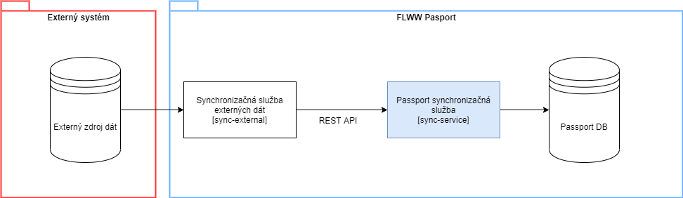

Dokument popisuje základné charakteristiky synchronizácie dát do systému Pasport z externých systémov. V rámci jednotlivých podstránok je popis synchronizácie vzhľadom na konkrétny externý systém.
Jadro synchronizácie predstavuje pasport komponent sync-service, ktorá má vystavené REST API cez ktoré je možné synchronizovať dáta do systému Pasport.
Popis tohto REST API je tu Synchronizacna komponenta API
v rámci popisu API je vidieť aké všetky entity je možné synchronizovať do pasportu
hlavným obmedzením API je počet záznamov ktoré je možné v rámci jedného požiadavku synchronizovať - aktuálne 200
Koncept synchronizácie z externých systémov je, že sú budované samostatné synchronizačné služby pre daný externým systém, ktoré komunikujú so sync-service
Tieto samostatné synchronizačné služby sú samostatne nasadzované, pričom sync-service nemá na ne žiadnu závislosť. Závislosť je opačná, teda externá synchronizačná info musí mať definovanú integráciu na sync-service. (táto informácia je napr. na úrovni nasadenia danej služby)
Tok synchronizácie z externého systému do systému Pasport:

Pod externým zdrojom dát si môžeme predstaviť zdroj vo forme databázy, REST API, a pod. To akou formou je realizovaná integrácia s týmto zdrojom, je čisto v kompetencii "synchronizačnej služby externých dát".
synchronizačná služba externých dát [sync-external] vyhodnocuje, ktoré entity majú byť synchronizované na základe dát z Externého dátového zdroja
sync-external riadi nadväznosť synchronizacií závislých entít
sync-external volá passport synchronizačnú službu [sync-service] pomocou REST API volaní
sync-service vyhodnocuje, ktoré entity updatuje, príp. insertuje do Passport DB na základe spoločného identifikátora
atribút external_id ktorý má každá entita určená na synchronizáciu
sync-service odpovedá sync-external identifikátormi entít, ktoré boli, resp. neboli zosynchronizované
sync-external spracováva informácie o synchronizovaných, resp. nesynchronizovaných entitách
[sync-external] Začiatok synchronizácie / synchronizačného cyklu (CRON, volanie API, ..)
[sync-external] Log [Info] začatie synchronizácie (čas, komponent, ...)
[sync-external] Synchronizácia entít v poradí určenom na základe ich nadväzností
[sync-external] Synchronizácia entity
[sync-external] Log [Info] synchronizácia entity (čas, komponenta, typ entity, ...)
[sync-external] Určenie dotknutých entít (na základe externého dát. zdroja)
[sync-external] Volanie [sync-service] synchronizačného API (komponenta, typ entity, dáta) [*]
[sync-service] Validácia prijatých dát (typ entity, entity) z pohľadu povinných atribútov, prípadne dátových typov → Log [Error], filtrácia validných entít
[sync-service] Upsert entít do Passport DB jednotlivo [*] → Log [Warning] entity, ktoré neprejdu
[sync-service] Log [Info] ukončenie synchronizácie entity (čas, zdrojová komponenta, typ entity, optional - id synchronizovaných entít)
[sync-service] Vrátenie zoznamu identifikátorov synchronizovaných, resp. nesynchronizovaných entít (neprešli validáciou + neprešli upsertom, možno vracať aj dôvod)
[sync-external] Vyhodnotenie synchronizácie entity (zaznamenanie, ktoré boli/neboli synchronizované)
[sync-external] Log [Info] ukončenie synchronizácie entity (čas, komponenta, typ entity, ...)
[sync-external] ↻ Nasledujúce entity...
[sync-external] Log [Info] ukočenie synchronizácie / synchronizačného cyklu (čas, komponent, ...)
* Pri väčšom množstve dát volať po dávkach - treba špecifikovať množstvo
Typ entity | entity_name |
|---|---|
Adresa | address |
Nádoba | container |
Kategória nádoby | container_category |
Farba nádoby | container_color |
Materiál nádoby | container_material |
Vzor nádoby | container_pattern |
Typ nádoby | container_type |
Stanovisko | site |
Priradenie nadoby ku stanovisku | site_container_assignment |
Druh odpadu | garbage_type |
Frekvencia vývozu | waste_disposal_frequency |
Základne dni zvozu | waste_disposal_day |
Zákazník | customer |
Objednávka | order |
Polozka objednavky | order_item |
Revizia polozky objednavky | order_item_revision |
Priradenie nadoby k polozke objednavky | container_order_item_assignment |
Synchronizačná komponenta loguje nasledovné procesy:
Proces | Popis | Poznámka |
|---|---|---|
Celková synchronizácia | V prípade ak je zavolané API pre účely synchronizácie určitej entity, logujeme začiatok, koniec a prípadné zlyhanie tohto procesu |
|
Synchronizácia entity | Stav synchronizácie konkrétnej entity - v zmysle či prebehlo správne, alebo tam je chyba, prípadne validačný problém
|
|
Základné atribúty log správy ktorý je vidieť v kibane:
Parameter | Príklad hodnoty | Popis |
|---|---|---|
COMPONENT_NAME | sync-service | názov synchronizačnej komponenty |
msg | [SYNC_PROCESS_STATUS]: Sync 'customer' finished | správa je konštruovaná podľa patternu:
|
log |
| Základné atribúty logu
|
|
|
|
Sync-service REST API podporuje posielať parameter "processId" pre každé volanie, ktoré následne ukladáme do všetkých logov. V prípade ak sa nepošle - Sync service si vytvorí vlastný procesId.
Parameter slúži primárne pri zisťovaní prípadných problémoch v logoch, kedy budeme potrebovať pozrieť logy zo synchronizačnej služby externých dát (sync-external) a z tejto obecnej sync-service. Tým pádom budeme vedieť prepojiť procesy z oboch služieb.
Detailný popis pre každý proces je popísaný nižšie s ukážkami jednotlivých logov a ako tieto logy filtrovať.
V prípade ak je zavolané API pre účely synchronizácie určitej entity, logujeme začiatok, koniec a prípadné zlyhanie tohto procesu.
V tomto procese nás zaujíma vyhľadať konkrétny stav procesu synchronizácie pre nejaký typ entity (napr. či skončil úspešne stav synchronizácie entít zákazníkov)
Field | Operator | Values | Popis |
|---|---|---|---|
COMPONENT_NAME | is | sync-service |
|
syncLoggingCode | is | SYNC_PROCESS_SUCCESS | SYNC_PROCESS_STARTED - proces synchronizácie začal SYNC_PROCESS_SUCCESS - proces synchronizácie skončil úspešne SYNC_PROCESS_FAILED - proces synchronizácie skončil s chybou |
data.entityType | is | customer | viď entity_name v tabuľke vyššie |
Príklad logu:
Parameter | Hodnota | Popis |
|---|---|---|
msg | [SYNC_PROCESS_SUCCESS]: Sync 'customer' finished |
|
log | špecifické atribúty v rámci "data":
|
Stav synchronizácie konkrétnej entity - v zmysle či prebehlo správne, alebo tam je chyba, prípadne validačný problém
V tomto procese nás zaujíma vyhľadať konkrétny stav procesu synchronizácie konkrétnej entity (napr. či skončil úspešne stav synchronizácie entity zákazníka ktorý vyhľadáme podľa externého identifikátora)
Field | Operator | Values | Popis |
|---|---|---|---|
COMPONENT_NAME | is | sync-service |
|
syncLoggingCode | is | SYNC_ENTITY_SUCCESS | SYNC_ENTITY_SUCCESS - proces synchronizácie entity skončil úspešne SYNC_ENTITY_VALIDATION_FAILED - proces synchronizácie entity skončil s chybou validácie SYNC_ENTITY_FAILED - proces synchronizácie entity skončil s chybou |
data.entityType | is | customer | viď entity_name v tabuľke vyššie |
data.entityExternalId | is | 123 | externý identifikátor entity |
data.syncOperation | is | create
| ak chceme vidieť len určitú operáciu synchronizácie create - entita bola vytvorená update - entita bola zeditovaná delete - entita bola vymazaná
|
Príklad logu:
Parameter | Hodnota | Popis |
|---|---|---|
msg | [SYNC_ENTITY_SUCCESS]: Entity 'customer' [customer_aimaps_16] is synced | Hodnota [customer_aimaps_16] je externe id entity |
log | špecifické atribúty v rámci "data":
|